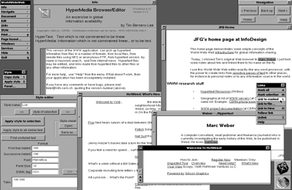
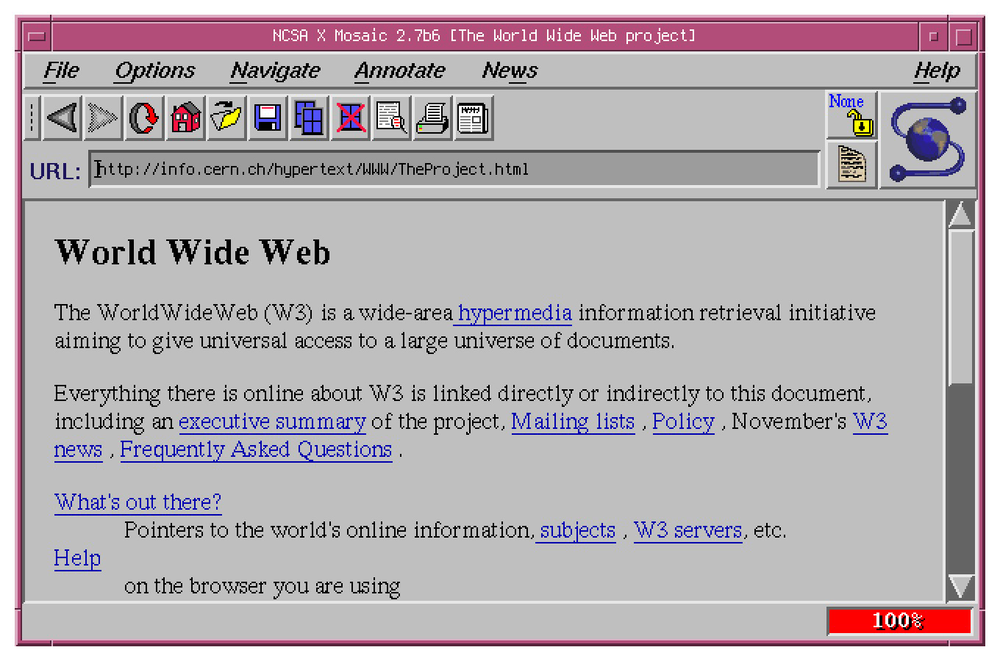
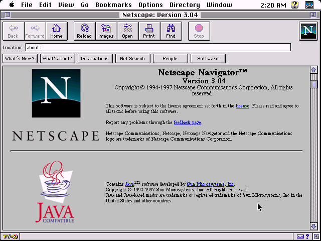

Early Web Browsers
WWW
The early days of web browser technology came in 1989, with the invention of Sir Tim Berners-Lee’s WorldWideWeb (WWW). Berner-Lee developed this technology at CERN (European Organization for Nuclear Research) to “Meet the demand for automated information-sharing between scientists in universities and institutes around the world”. In fact, the very first website (also developed by CERN in 1991) was dedicated to Berner-Lee’s World Wide Web Project (Cern, 2019).
The first web browser had a very simple menu and was limited. While you could access images, they would not display inline with the text and instead open in a new window. Lastly, there was also no way for individuals to play audio in the web browser without external plugins.
(Berners-Lee, n.d.)
Mosaic Web Browser
The next evolution in Browser technology occurred in 1993 with the Mosaic web browser, which featured the first (popular) graphical user interface (GUI).
The National Center for Supercomputing Applications (NCSA) developed Mosaic with more user friendliness in mind. The browser could handle various popular internet protocols at the time, such as FTP, NNTP, and HTTP. It could also display images inline with text instead of opening a new window.
(@nixCraf)
Netscape Navigator
While Mosaic was revolutionary, the team leaders, Marc Andreessen and Eric Bina, left the NCSA to further develop their browser. Their work led to the creation of Netscape Navigator, and even more comprehensive web browser technology. At the time, Netscape navigator was the most advanced and usable browser, becoming the browser share leader in only four months and owning 80% of the browser market share by 1996 (Version Museum, n.d.).
While similar, there was a key difference between Netscape Navigator and Mosaic: speed. Netscape was much faster when compared to Mosaic, it included many features that can reduce transfer times. Most of these improvements involved dealing with image transfers. One example is a document with multiple images. Netscape could download the document and images simultaneously, but Mosaic would download each image file sequentially. Netscape also included support for both JPEG and GIF file formats, while Mosaic only supported GIFS
(WinWorld, 2025)